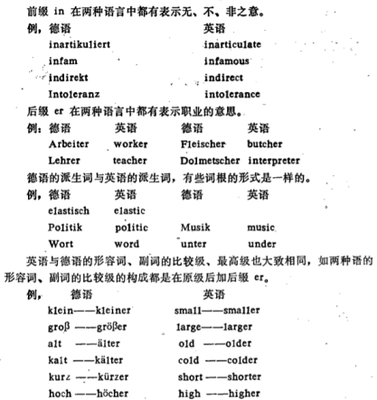

英语和德语的关系(一)——近代
作者：闫刚
时间：2018-12-04 19:52:59 | 来源：本站
近些年来，世界各国人民对学习德语和德国文化的兴趣与日俱增。其中一个突出的表现是人们把德语作为一种“科学语言”来学习，对此最好的说明是越来越多的大学生和科技工作者在学习德语：在中国每年有数万人次的学生参加TestDaF（德福）考试，以获得留学德国的资格；在日本的大学有超过一半的学生学习德语；同时德语作为一种国际贸易语言运用的范围越来越广，德国的一些知名企业，如大众、西门子等在全球范围类的经营扩张，使得德语被越来越多的人认可和需要。与当今世界的通用语言英语相比，英语和德语究竟有怎样的关系呢？

图1 印欧语系的使用范围
语言学家将世界上大约4,000多种语言分为若干语系,印欧语系是其中最大的语系,英语、德语便同属于这一大语系。印欧语系大致可分为10到12个语族,日耳曼语族是其中一个比较大的重要语族,其中的西日耳曼语支就包括今日的荷兰语、英语、德语等。从以上语言谱系分布可看出英语、德语是两种带亲缘关系的语言,它们出自同一家谱,也就是它们有着同一个祖先。 英语作为全球运用最为广泛的语言，一直都是学生最重视的课程。在学习这两种语言的过程中，我们不难发现许多德语词与英语词相似，这是因为它们都源出于印欧语系中的日耳曼语族，有着相同的起源，这类词叫做“同源词”。以德语词汇来说，大部分单词或词根与英语完全相同或相近，据统计，英语与德语相同或相近的词汇不下8000个。例如：
英语arm, 德语Arm, (手臂) 英语magnet, 德语Magnet, (磁铁) 英语modern, 德语modern, (现代的) 英语nature, 德语Natur, (自然) 英语auto, 德语Auto, (汽车) 英语hand, 德语Hand, (手) 两种语言的派生词的词根也有着大量的相似形。如: 英语music, 德语Musik, (音乐) 英语fish, 德语Fisch, (鱼) 英语night, 德语Nacht, (夜) 英语under, 德语unter, (下面) 英语word, 德语Wort, (词) 英语light, 德语Licht, (光) 英语storm, 德语Sturm, (风暴) 英语for, 德语für, (为了) 英语politic, 德语Politik, (政治) 再比较一下下面几个句子： 英语My name is Wang Dali. 德语Mein Name ist Wang Dali. 英语That’s good. 德语Das ist gut. 英语So long. 德语so lange. 英语such a ... 德语solch ein ... 英语How goes it? 德语Wie geht es?
图2 英语和德语的一些比较
就可以看出它们十分相像，可以说学习英语的基础可以使德语学习事半功倍。
从历史渊源上更可看出它们之间的密切的亲缘关系。古时的日耳曼部落移居大不列颠时，使用的都是日耳曼语，因此绝大多数的古英语词汇是西日耳曼语固有的词汇。而留在欧洲大陆西北一带的其余日耳曼部族,随着人民之间的互相往来，逐渐出现了一种共同使用的语言,即德语(Deutsch)。由于历史、地理等条件的限制,欧洲大陆与英国横距大海,在一段时间内两个地区的政治、经济等联系越来越少,人们之间的接触和交往减弱,形成了一定的社会分化,语言差别也越来越大,逐渐完全不同,分别形成了近代的英语与德语。尽管在这之后发生了多次外族入侵,大量的法语、拉丁语等词汇入侵英语,但据统计仍有约5000个左右英语词汇保持不变,直到今天还使用着,这些词汇构成了现代英语词汇的基本结构，可以说英语的形成发展即西日耳曼语的演变。从以上追溯,我们可看出古英语与古德语就好像两个亲兄弟，只是由于地理和历史原因变得不那么亲密。